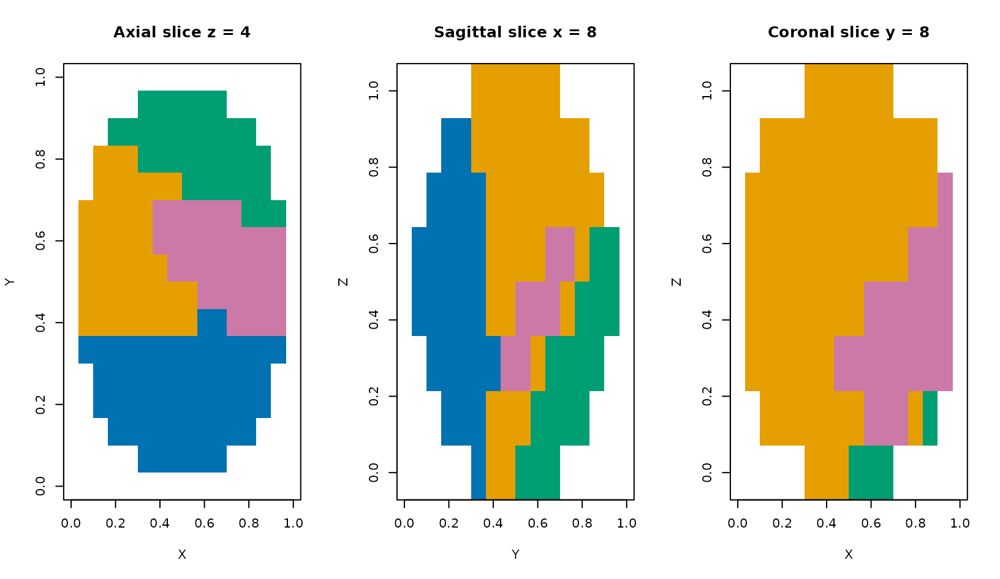
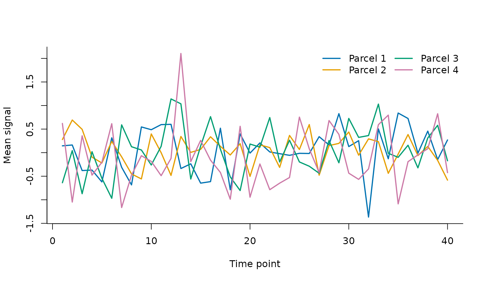

What should you inspect before export?
A label file can be written successfully and still be unhelpful. Before export, inspect all three anatomical planes, the parcel-size distribution, and the parcel mean time series. Check the result contract against the original data and mask as a separate step.
base_syn <- generate_synthetic_volume(
scenario = "gaussian_blobs", dims = c(16, 16, 8),
n_clusters = 4, n_time = 40, noise_sd = 0.08, seed = 42
)
dims <- base_syn$dims
ijk <- arrayInd(seq_len(prod(dims)), dims)
inside <- ((ijk[, 1] - 8.5) / 7.5)^2 +
((ijk[, 2] - 8.5) / 7.0)^2 + ((ijk[, 3] - 4.5) / 3.8)^2 <= 1
mask_array <- array(as.integer(inside), dims)
spatial_space <- neuroim2::NeuroSpace(
dims, spacing = c(2, 2.5, 3), origin = c(-18, 7, 11)
)
series_space <- neuroim2::NeuroSpace(
c(dims, 40L), spacing = c(2, 2.5, 3), origin = c(-18, 7, 11)
)
series_values <- array(
as.numeric(base_syn$vec), dim = dim(base_syn$vec)
)
syn <- list(
vec = neuroim2::NeuroVec(series_values, series_space),
mask = neuroim2::NeuroVol(mask_array, spatial_space),
truth = base_syn$truth[inside], dims = dims
)
stopifnot(all(sort(unique(syn$truth)) == 1:4), any(!inside), any(inside))
fit <- cluster4d(
syn$vec, syn$mask, 4, method = "rena",
connectivity = 26, parallel = FALSE
)How do you inspect the parcel map?
The plot method uses voxel-index coordinates and displays axial, sagittal, and coronal slices through the requested location. Label colors are categorical; their numeric IDs carry no ordering or distance.
plot_receipt <- plot(
fit, slice = c(8, 8, 4), view = "all",
colors = parcel_colors[seq_len(fit$actual_k)]
)
Orthogonal views through the fitted four-parcel map. The public plot method applies one fixed label range to every panel, so a label keeps the same categorical color even when another label is absent from one plane.
The three planes are complementary: a parcel that looks contiguous axially may split along z. For a real analysis, inspect several slices rather than treating the middle slice as a topology check.
What do the parcel signals look like?
fit$centers contains one mean time series per final
label in the original feature space. The row-to-label mapping is
explicit in fit$label_ids.
data.frame(
label = fit$label_ids,
voxels = tabulate(fit$labels, nbins = fit$actual_k),
temporal_sd = round(apply(fit$centers, 1, sd), 3)
)
#> label voxels temporal_sd
#> 1 1 240 0.486
#> 2 2 340 0.332
#> 3 3 148 0.519
#> 4 4 112 0.662
Final parcel mean time series in the original feature space. Distinct profiles are expected in this simulation; real fMRI parcel means also contain nuisance and acquisition structure unless preprocessing addresses it.
How do you write the complete label map?
fit$clusvol is a ClusteredNeuroVol with the
original geometry and final labels. neuroim2::write_vol()
has a method for this class, so no manual array reconstruction is
needed.
output_file <- file.path(tempdir(), "neurocluster-parcels.nii.gz")
neuroim2::write_vol(fit$clusvol, output_file)
c(path = output_file, bytes = file.info(output_file)$size)
#> path
#> "/tmp/RtmpE9WVGR/neurocluster-parcels.nii.gz"
#> bytes
#> "410"Read the file back before handing it to another tool. This catches path, compression, geometry, and datatype surprises at the workflow boundary.
How do you export one parcel as a mask?
Comparison on a ClusteredNeuroVol produces a
geometry-preserving logical volume. This is useful when a downstream
tool expects one binary ROI.
parcel_one <- fit$clusvol == 1L
parcel_file <- file.path(tempdir(), "neurocluster-parcel-01.nii.gz")
neuroim2::write_vol(parcel_one, parcel_file)
sum(as.array(parcel_one))
#> [1] 240For a complete read-cluster-write workflow, continue with End-to-end NIfTI export.